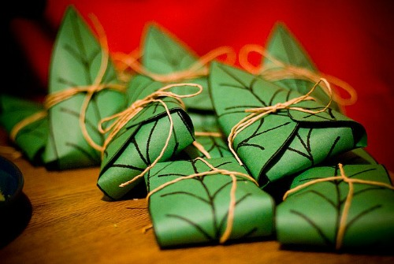

Lembas Bread

Description
For those who don't know, lembas is a special bread made by the elves of the Lord of the Rings series. It's shaped into thin cakes and because of its filling nature it's usually used for sustenance on long journeys. Generally wrapped in Mallorn leaves, not much else is known about the ingredients. The bread is supposed to be brown on the outside and cream colored on the inside, sort of like a flat bread, and tastier than most other cakes in Middle-Earth.
These would probably make great party hors d'oeuvres if you're nerdy enough to have a LoTR themed party. Which you probably are. Dork.
Ingredients
- 3 eggs
- 1 c. honey
- 3 kumquats, whole (can substitute orange zest and a bit of juice if desired)
- 2 tsp. orange flower or rose water (optional)
- 3 oz. chopped almonds or macadamia nuts (fruits of the Mallorn tree)
- ¼ c. melted butter
- 2 ¼ c. flour (barley flour of you want to be really accurate)
- ½ tsp. salt
Steps
- Put the eggs, butter, honey, kumquats, rose or orange flower water, and nuts in a food processor or blender.
- Blend on high for 2-4 minutes. Add 1 cup of the flour. Blend for a minute or two.
- Put mixture into a bowl and add the remaining flour and the salt.
- Whisk or stir until well blended.
- Bake a small amount of dough (about two tablespoons) at a time on a pizzelle or iron about 15 seconds or until lightly brown, for a flat bread like texture.
- Wrap in a leaf and tie with a string!